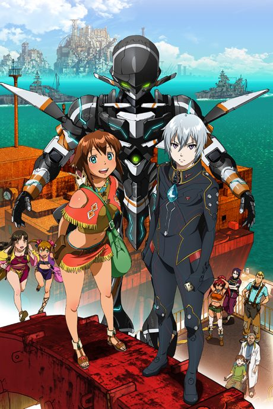

AnimeGargantia on the Verdurous Planet
翠星のガルガンティア
An original anime, so there's no book to continue with.
7.2AniList
—Animeter
13 epEpisodes
Is it worth pushing through?
Built from what visitors report across all 13 episodes.
Loading reports…Checking what other people said about this one.
Sign in above with your email to add your report.